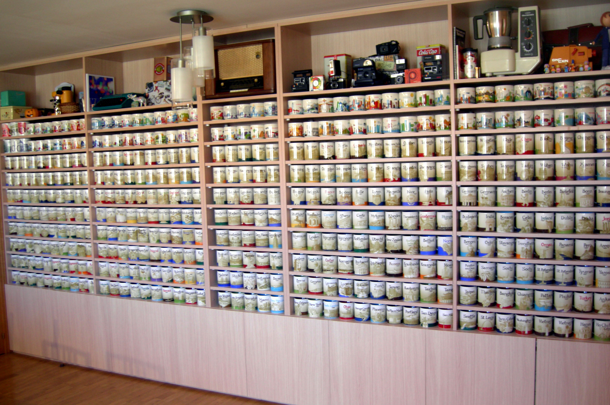

Bienvenidos al Ejercicio final del cursoEl texto superior está con tipo de letra Palatino Linotype, y es un encabezado. De hecho, hay que hacer constar que el texto por defecto del sitio web es Palatino Linotype El texto está embebido en una tabla (mediante la etiqueta <table>, y dentro se han insertado varias filas y/o celdas Para que se considere, todo este contenido está ocupando un total del 65% del ancho de la página. Los porcentajes superior, inferior, izquierdo y derecho que se ven de margen son, respectivamente 5%, 0%, 30% y 5%. El fondo está fijo. Para ello, lo mejor es poner la siguiente regla en CSS: background-attachment: fixed; Seguro que lo consigues...El texto de párrafo, por defecto, está justificado. Los títulos (etiquetas hx) están todos centrados. El texto del cuerpo de la página web es, e cualquier caso, Palatino Linotype. El padding de los encabezados es 5% (izquierda y derecha), el de los párrafos es 10% (izquierda y derecha) y el de las listas es del 15% (izquierda y derecha ... y otras muchas cosas que es importante considerar...Hay que tener en cuenta las siguientes restricciones
Respecto al fondo de la página también hay que tener en cuenta las siguientes consideraciones:
|
Y si te gusta el café... esta imagen seguro que es sugerente World Wide Web Consortium (w3c) es una comunidad internacional que desarrolla estandares que aseguran el crecimiento de la web a largo plazoPulsa sobre este enlace e irás a su pagina principal |